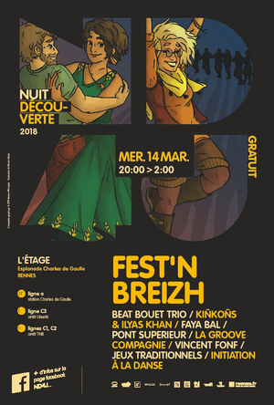

Edition 2018
Les invitées
- Vincent fonf
- La jaupitre
Vincent Fonf, artiste plasticien réalise des performances peintures.
A l’aide de sa palette de couleurs et de rythmes, il peint en tapant sur sa toile, avec un pinceau dans chaque main. Les musiciens, le public, le lieu deviennent sa partition.

Association dont le but est de collecter et diffuser la pratique des jeux bretons.

Programmation
Les groupes:
- Le Pont Supérieur
- Sérot/Janvier et la GrOove compagnie
- Kiñkoñs & Ilyas Raphaël Khan
- Beat Bouet Trio
- Faya Bal
Le Pont Supérieur accompagne les artistes du spectacle vivant vers les métiers d’interprètes et de pédagogues dans les disciplines de la danse et de la musique.
Les éléves du pont supérieur passent leurs examens sur la scéne du Fest'n breizh.
Sérot/Janvier et la GrOove cie. Fanfare à danser - animation de rue et fest-noz.
Kiñkoñs est un groupe qui a évolué en restant fidèle à son but premier, celui de faire une musique dansante.
En créant une formation avec Ilyas Raphaël Khan (Tabla et Beatbox), ils proposent un délicieux mélange entre musique bretonnes et sonorité indienne.
Trio au textes engagés qui fait le lien entre musique urbaine et musique traditionnel de Haute-Bretagne.
Beatbox, acordeon et chant gallo sont au rendez vous.
Faya Gur (beat bouet trio) en solo: Sound System Reggae-Dub-Digital à danser, en rond, en couple, en quadrette ou en free style.